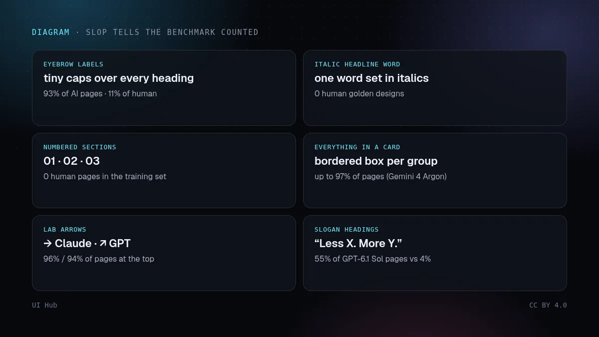
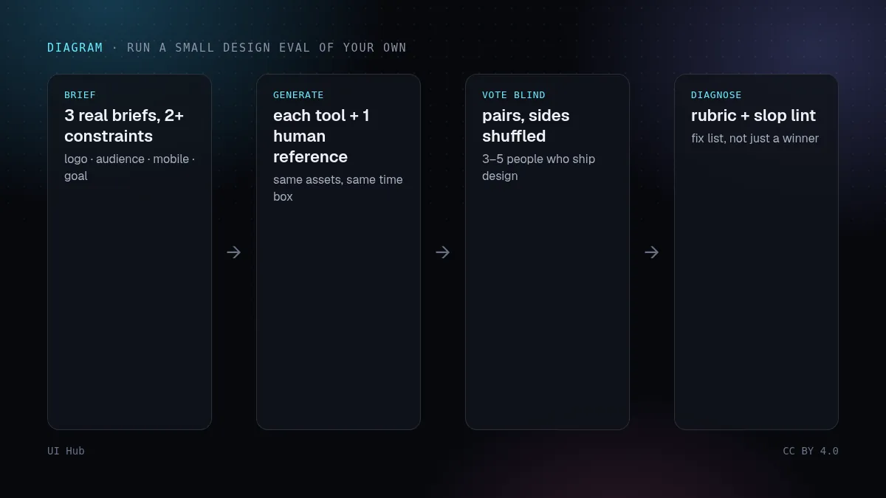

11 月 18 日，自由职业平台 Contra 旗下的研究团队 Contra Labs 与 BenchFlow 联合发布了 Frontier Design Benchmark。BenchFlow 的业务是在沙箱里运行 AI 智能体并记录产出。一天之内，结论就在 X 和 Hacker News 上传开了：一个名叫 Gestalt、没有公开开发方的匿名模型以约 1,930 的 Elo 排名第一，既超过了最强的已知模型，也超过了人类设计师。一位来自 Contra 的评论者在 Hacker News 上澄清，这是单个模型，而且不是 Contra 自己的。
排行榜是这次发布里最不耐久的部分。Gestalt 用不了，模型名字到明年春天也会换一轮。真正留得住的是方法，以及它的一个副产品：一份让页面「看起来像机器做的」视觉习惯清单，每一条都有实测频率。如果你用 AI 生成界面，这份清单就是一套这周就能拿来检查自己作品的规则。

评分细则在模型上和设计师意见一致，在人身上却不一致。在 15 个模型之间，细则分数和投票排名高度吻合（r = 0.94）。但人类黄金设计的细则得分只有 73.6，16 个参赛者中排第六，落后于排名靠前的 Claude 和 GPT 模型，因为它们有具体的瑕疵：按钮文字颜色太深看不清、字标被上一个区块挡住一截。即便如此，设计师在 74% 的对决中仍然选了它们（574 票中 425 票）。检查清单能抓住错误，但测不到大家真正在投的那样东西。
AI 味主要是频率问题，而且可以计数。Contra 公开了模式清单的一小部分，并附上数字。标题上方那行字号很小、字距拉开、只是重复标题内容的标签：检测器训练集里 93% 的 AI 页面有一半以上的区块这样做，人类页面只有 11%。标题里单独一个斜体词：某个模型最多 51% 的页面这样做，人类黄金设计一个都没有。01、02、03 编号的分区：17% 的 AI 页面，人类页面一个都没有。几乎所有内容都装进卡片：三个模型在 86% 到 97% 的页面上这样做。
每家实验室都会留下指纹。Claude 系模型在 81% 到 96% 的页面上给链接和按钮加横向箭头 →；GPT 系模型在 87% 到 94% 的页面上用斜向箭头 ↗。某个 GPT 模型在 55% 的页面上把标题写成两三个并列短语的口号，其他实验室只有 4%。另一个模型在 44% 的页面上把所有区块标题居中，其他模型只有 1%。在 AI 味检测器上，人类黄金设计读数为 0.9，Gestalt 与之接近；三个 Claude 模型在 31 到 38 之间，两个 GPT 模型在 41 到 53 之间，两个 Gemini 模型在 54 到 57 之间。在 Contra 自己跑的模型里，读数最低的是 DeepSeek V4 Pro，而它的排名也是最后，因为它的页面常常没做完。看起来不像 AI，并不等于做得好。
把这三种工具当成三个问题，永远不要压成一个分数。投票回答「大家想要哪个方向」；评分细则回答「哪里坏了、能修」；AI 味读数回答「这会不会和别人生成的页面长得一样」。黄金设计的结果说明了顺序为什么重要：先凭品味选方向，再拿细则当修改清单，最后检查 AI 味。如果先跑细则，大家最喜欢的设计会被排在五个模型后面。
检查比例，而不是一刀切禁止。一个区块上有小标签是选择；每个区块都有，就是默认值露了馅。卡片、箭头、居中标题都一样。解决办法很少是删掉这个模式，而是在设计系统里定一次：用哪个箭头字符、标题怎么对齐、什么样的内容组才配一个框。这样就不再由模型的「家族风格」替你做决定。
对头条结论要谨慎。排行榜的运营方同时向模型实验室出售评测数据；Gestalt 的网站没有出现在公开作品库里；它胜过人类设计师的结论只建立在 28 场对决上。NN/g 讲的「美感—可用性效应」也提醒我们：盲评「哪个更好」奖励的是吸引力，而吸引力可能掩盖可用性问题。排行榜适合拿来缩小候选范围，然后用你自己的需求再测一遍。
我们拿这份公开清单检查了本博客：我们的示意图一直给步骤编号，所以这篇文章里的示意图不再编号。示意图格子里的小号大写键名保留：每个键名标注的是不同的数值，而不是重复标题，清单警告的是后一种情况。

# 把这段贴给你的设计或编程智能体
检查 <文件夹或 URL 列表> 中的页面有没有 AI 默认样式。
- 对每个页面统计区块数，并报告以下情况各占多少比例：
标题正上方有小号大写、字距拉开的标签；大部分内容被带边框或
底色的卡片包住；标题居中；有旋转元素；链接或按钮里有箭头字符（→ ↗）。
- 标出：h1 里有单独的斜体或高亮词、区块编号（01、02 …）、
口号式标题。
- 任何比例超过 50% 都要标出，并为每一项提出一条设计系统规则
（例如「箭头只用于外部链接」）。先不要改代码。
- 然后在 390px 和 1280px、亮色和暗色下检查细则基本项：
按钮对比度、被裁切的文字或 Logo、字号层级、间距。
输出一张表和一份简短修改清单，等我确认。UI Hub 相关阅读：用设计技能教智能体品味、用 lint 让智能体守住设计系统，以及让 AI 设计变体可以公平比较。